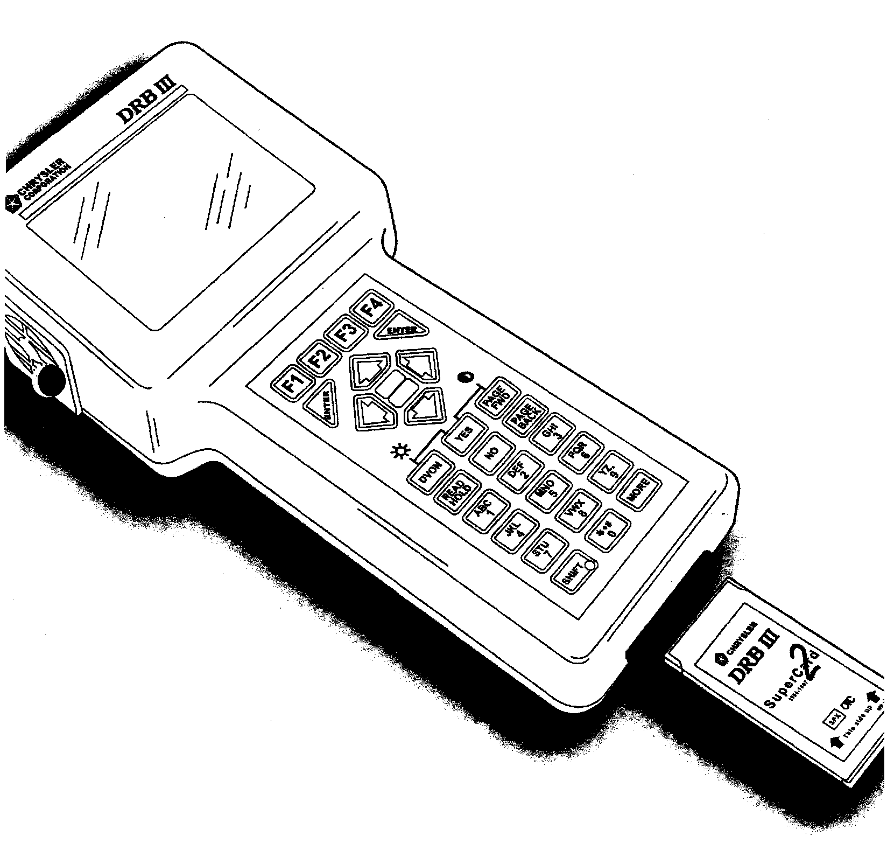
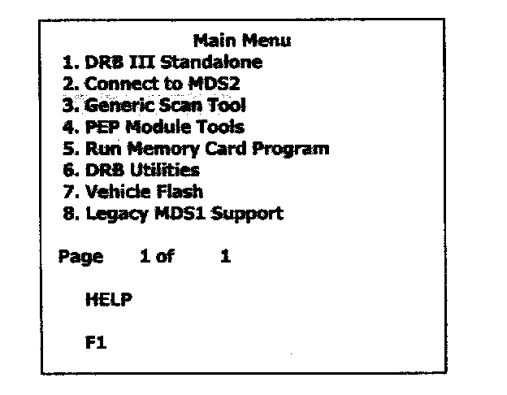
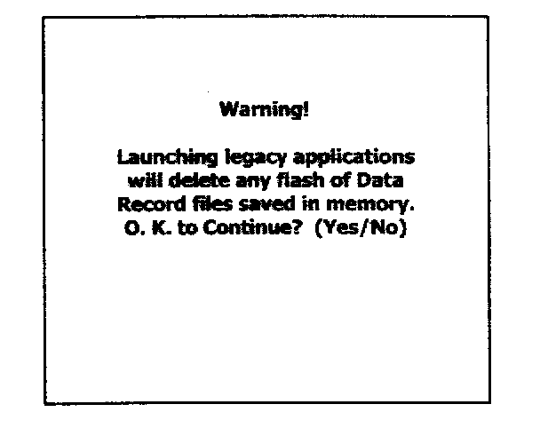
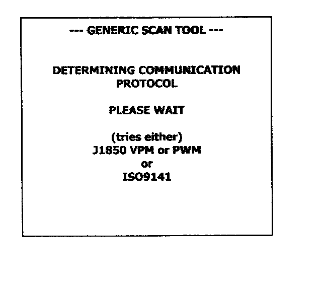
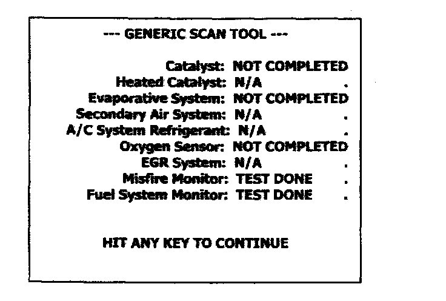
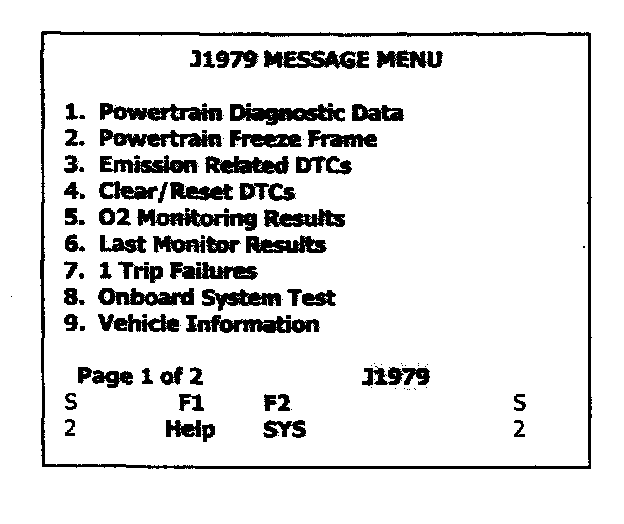
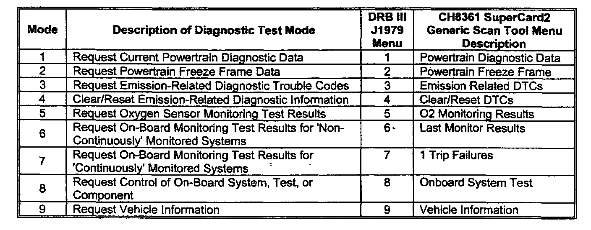

Quick Reference
���4:

Generic Scan Tool Quick Reference
Introduction
Using the DRB III(R) (ver. 52.00 and higher) and the CH8361 Supercard2 PCMCIA card (version 7.0 or higher) will provide access to Generic Scan Tool. This will provide information based on the legislative SAE J1979 Diagnostic Test Modes. These test modes are necessary to satisfy California Air Resources Board (CARB) regulations for On-Board Diagnostics - Generation II (OBD-II), and Environmental Protection Agency (EPA) requirements for Federal On-Board Diagnostics (OBO) of emission-related components and systems. The information contained in this document, was compiled and formatted by DTO's Electronic Validation DRB group to provide a baseline of our Generic Scan Tool support.
Note:
This information displayed while in Generic Scan Tool Mode was legislated and more information is usually supplied by using the usual DRB III(R) Standalone code.
Background
The Chrysler Group's Generic Scan Tool support was released in 1997 and until DRB III(R) Release 50.00 (June, 2000) resided as code within each release of Standalone DRB III(R) support. Since release 50.00 Generic Scan Tool support software has migrated to the SuperCard2, PCMCIA card P/N CH8361. This software has been updated. This will provide additional modes and adds our first update since its original release.
Using Generic Scan Tool
The SuperCard2 Generic Scan Tool software is best used for:
[ ] Verifying a "No-response" PCM condition using DRB III(R)
[ ] Providing a second opinion about DRB ill� monitors for a given PCM.
[ ] Reviewing Readiness Status for/from state testing facilities
Be careful in its use, due to the complex nature of OBD-II electronics, this data could be construed in a variety of different ways. The DaimlerChrysler Academy provides training classes to understand and interpret OBD-II information.
The following pages will provide step-by-step instructions to access "Generic Scan Tool Support" data display on the DRB III(R). A brief description of each Mode will then follow.
Disclaimer:
Due to the nature of regulations, items will change from the description included in this document. There are no planned updates for this document except when major changes to the code are scheduled.
How to access Generic Scan Tool (GST)
DRB III(R) Release 52.0 (and higher) is required to view Generic Scan Tool data.
Supercard2 (CH8361) at Release 7.0 (or higher).
Typical Screens are shown.

1. Select "3. Generic Scan Tool"

1.1 All our PCMCIA cards function using legacy.

1.2 Using the proper cable, either the CH7000/7001 or the MMC double headed CH7O1O.
1.3 The next screen is the Readiness Status screen.
This allows the end-user to determine which monitors apply to the vehicle being tested and if the applicable monitors have run.
The usual statuses to be seen are:
N/A - Not Applicable to the vehicle being tested
NOT COMPLETED - Monitor not completed
TEST DONE - Monitor completed
(at least one since DTC Erase or Battery Disconnect

Typical screen shown.

1.4 Generic Scan Tool (GST) Message Menus
Page 1 of 2 The numbers on page 1 are equal to the 11979 test modes 1 through 9.
Page 2 of 2 # 1 Re-shows the Readiness Status (same as above).
This prevents user from having to exit GST to re-read the Readiness Status.
# 2 Exits to the standalone main menu.
Scan Tool Modes

The required test modes are numbered. The usual DRB III Menu numbers reference them.
Test Modes
Included is a brief functional description of each test mode supported by CH8361 SuperCard2's Generic Scan Tool application. The information is characterized by requesting information using a parameter ID or PI0. This is a type of request/response that is legislated as part of SAE J1979 support.
NOTE1:
Not all PIO-requested information is applicable or supported by all systems. Consequently the Scan Tool software can only support what is available for a given vehicle in a given model year. It is our intent NOT to provide all possible screens but enough to provide insight into the available support.
NOTE2:
Generic Scan Tool SAE J1979 support is legislated through EPA and CARB. The user is forewarned that it is not the user-friendliest format, but rather the minimum requirements that allow all manufacturers to supply data in a common format. The DRB III Standalone mode is much more user-friendly. A cross-reference chart is included in Appendix A for comparison purposes.
NOTE3:
Typical screens from JTEC controllers as well as some SBEC screens will be used to illustrate generic Scan Tool support in this document.